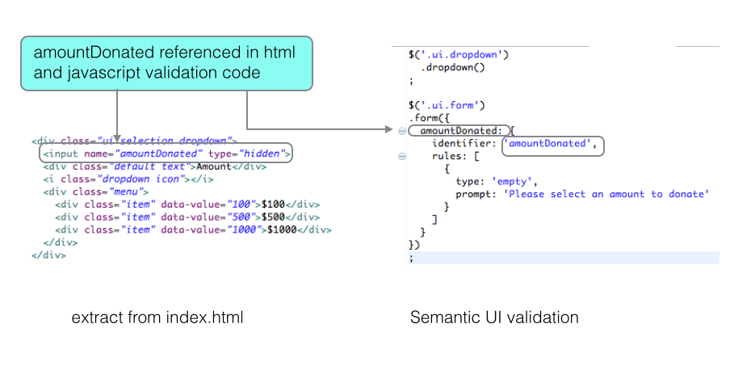
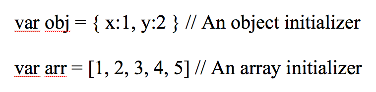
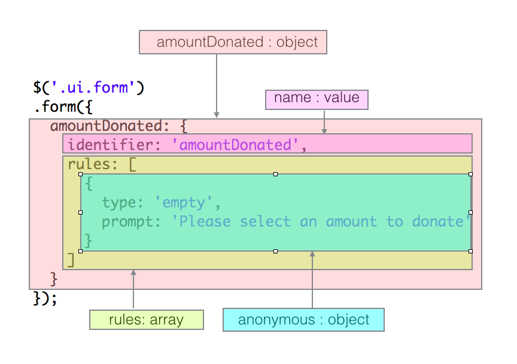
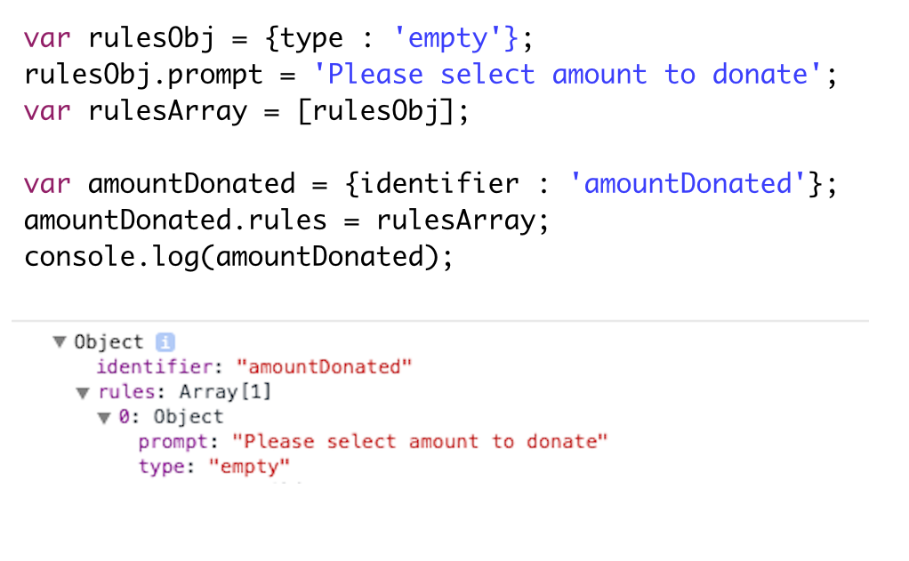
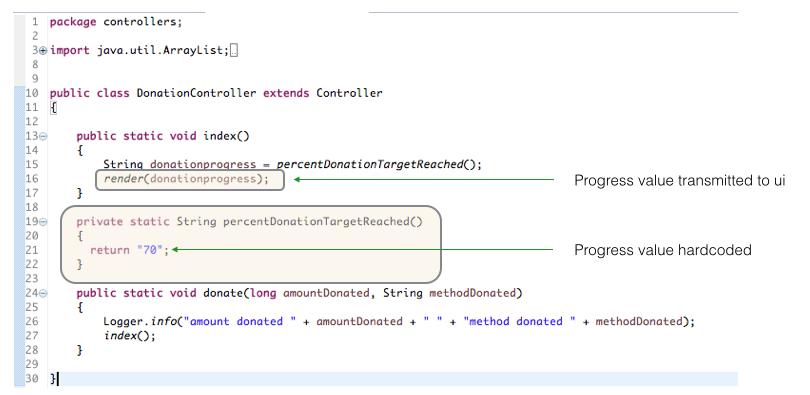

Semantic elements such as dropdown and radio button require initialization. Semantic also facilitates form validation. In this short tutorial a dropdown is initialized, form validation is invoked and use of a Semantic progress bar is demonstrated. jQuery ajax is employed to fetch and render data. Warning: This lab applies to Semantic UI version 1x. See the appendix for Semantic 2 material.
A subset of the donation app with sample Semantic-UI validation a demo progress bar may be downloaded here.
The make donation page should open directly as depicted in Figure 1.
Test validation by pressing the Donate button
Here is the index file for the donation screen:
Filename: index.html
#{extends 'main.html' /} #{set title:'Donation Request' /}
<section class="ui segment">
<h3>Welcome ...</h3>
Please give generously
<div class="ui grid">
<div class="six wide column">
<form class="ui form" action="/donation/donate" method="POST">
<table class="ui table">
<thead>
<tr>
<th>Make a donation</th>
</tr>
</thead>
<tbody>
<tr>
<td>
<div class="ui selection dropdown">
<input name="amountDonated" type="hidden">
<div class="default text">Amount</div>
<i class="dropdown icon"></i>
<div class="menu">
<div class="item" data-value="100">$100</div>
<div class="item" data-value="500">$500</div>
<div class="item" data-value="1000">$1000</div>
</div>
</div>
</td>
</tr>
<tr>
<td>
<div class="grouped inline fields">
<div class="field">
<div class="ui radio checkbox">
<input id="paypal" name="methodDonated" value="paypal" checked="checked" type="radio">
<label for="paypal">PayPal</label>
</div>
</div>
<div class="field">
<div class="ui radio checkbox">
<input id="direct" name="methodDonated" value="direct" type="radio">
<label for="direct">Direct</label>
</div>
</div>
</div>
</td>
</tr>
<tr>
<td>
<div class="ui blue submit button">Donate <i class="add icon"></i></div>
<div class="ui error message"></div>
</td>
</tr>
</tbody>
</table>
</form>
</div>
</div>
<!-- Donation progress -->
<div class="ui segment">
<div class="ui indicating progress" id="progress">
<div class="bar">
<div class="progress"></div>
</div>
<div class="label">${donationprogress}% target achieved to date</div>
</div>
</div>
</section>
<script src="@{'/public/javascripts/donate.js'}"></script>
<script>
$('#progress').progress('increment', '${donationprogress}');
</script>Note the script tag towards the end of the file. This loads a JavaScript file named donate.js.
<script src="@{'/public/javascripts/donate.js'}"></script>Filename: donate.js
// Initialization
$('.ui.dropdown')
.dropdown()
;
// Form validation
$('.ui.form')
.form({
amountDonated: {
identifier: 'amountDonated',
rules: [{
type: 'empty',
prompt: 'Please select an amount to donate'
}]
}
});Study the official documentation, the above code extracts and the contents of Figure 1 below to obtain an understanding of the validation process.

Here is the portion of the JavaScript file that validates input from the drop-down box in Donation once the Submit button is pressed.
Filename: donate.js
$('.ui.form')
.form({
amountDonated: {
identifier: 'amountDonated',
rules: [
{
type: 'empty',
prompt: 'Please select an amount to donate'
}
]
}
})
;Recall that a literal is a data value that appears directly in a program.

Using the information in Figure 1 helps us understand the structure of the code.
Figures 2 & 3 shows the how the parameter to the method form is composed.


You may explore this further by executing the following code.
Filename: semanticui_validation.html
<!DOCTYPE html>
<html>
<head>
<title>ICTSkills JavaScript</title>
</head>
<body>
<p id="p1"></p>
<script src="https://ajax.googleapis.com/ajax/libs/jquery/2.1.4/jquery.min.js"></script>
<script src="validation.js"></script>
</body>
</html>Filename: validation.js
var rulesObj = {type : 'empty'};
rulesObj.prompt = 'Please select amount to donate';
var rulesArray = [rulesObj];
var amountDonated = {identifier : 'amountDonated'};
amountDonated.rules = rulesArray;
console.log(amountDonated);Refer to the file index.html in DonationController.
Following extract renders a Semantic-UI progress bar.
<!-- Donation progress -->
<div class="ui segment">
<div class="ui indicating progress" id="progress">
<div class="bar">
<div class="progress"></div>
</div>
<div class="label">${donationprogress}% target achieved to date</div>
</div>
</div>Important note: the variable name donationprogress that appears as an argument in DonationController.index.render must be also used in the html progress bar expression (see above html and Figure 1).
The progress is initialized with this jQuery invocation:
<script>
$('#progress').progress('increment', '${donationprogress}');
</script>The expression '${donationprogress}' holds the progress bar value.
In this tutorial the value is hardcoded at 70% in the controller: see Figure 1.

The controller code is presented here.
index renders the make donation page, transmitting the donationprogress value as an argument in the render method.
the private helper method percentDonationTargetReceived returns a fixed value as a string.
donate receives the amount donated and the method by which the donation is made.
package controllers;
import java.util.ArrayList;
import java.util.List;
import play.Logger;
import play.mvc.Controller;
public class DonationController extends Controller
{
public static void index()
{
String donationprogress = percentDonationTargetReached();
render(donationprogress);
}
private static String percentDonationTargetReached()
{
return "70";
}
public static void donate(long amountDonated, String methodDonated)
{
Logger.info("amount donated " + amountDonated + " " + "method donated " + methodDonated);
index();
}
}The method DonationController.donate is the destination of form data:
<form class="ui form" action="/donation/donate" method="POST">This is established in the routes file:
# Donation page
GET /donation DonationController.index
POST /donation/donate DonationController.donateA compressed archive of the project is available to download here.
A second project, also a Play app, named semantic_validation is available to download.
This project contains three controllers and associated templates. These are:
Application
Customize
Make Donation
To ensure that the progress bar does not exceed 100% one could:
Introduce some code in the Donation controller donate method to enforce the condition that the donation would only be accepted if the progress was still less than 100%.
More efficiently, perhaps, check within the DonationController template (view) that the donation progress is less than 100 before posting the donation.
Here is some sample code applying to the first approach:
// DonationController.donate
public static void donate(long amountDonated, String methodDonated, String candidateEmail)
{
session.put("currentCandidate", candidateEmail);
User user = Accounts.getCurrentUser();
if (user == null)
{
Accounts.login();
}
else
{
String progressPercent = getProgress();
Candidate candidate = Candidate.findByEmail(candidateEmail);
if(!progressPercent.equalsIgnoreCase("100"))
{
Donation donation = new Donation(user, amountDonated, methodDonated, candidate);
donation.save();
candidate.addDonation(donation);
candidate.save();
user.addDonation(donation);
user.save();
}
JSONObject obj = new JSONObject();
obj.put("progress", progressPercent);
obj.put("candidate", candidate.firstName + " " + candidate.lastName);
renderJSON(obj);
}
}The associated JavaScript could be something like this:
$('.ui.dropdown').dropdown();
$('.ui.form')
.form({
candidateEmail: {
identifier: 'candidateEmail',
rules: [{
type: 'empty',
prompt: 'Please select a Candidate to whom you wish to make a donation'
}]
},
amountDonated: {
identifier: 'amountDonated',
rules: [{
type: 'empty',
prompt: 'Please select an amount to donate'
}]
}
},
{
onSuccess : function() {
submitForm();
return false;
// TODO: Check why dropdown remains open following press donate button.
}
});
function submitForm() {
var formData = $('.ui.form.segment input').serialize();
$.ajax({
type: 'POST',
url: '/donation/donate',
data: formData,
success: function(response) {
console.log("make donation page submitForm response: " + response.progress);
$('.ui.indicating.progress').progress({
percent: response.progress
});
$('#progresslabel').text(response.progress + " % of target achieved to date for candidate " + response.candidate);
}
});
}And the html might be something along the lines of:
<!-- Donation progress -->
<div class="ui segment">
<div class="ui indicating progress" id="progress">
<div class="bar">
<div class="progress"></div>
</div>
<div class="label" id="progresslabel"></div>
</div>
</div>
</section>
<script src="@{'/public/javascripts/donate.js'}"></script>
<!-- See: http://semantic-ui.com/modules/progress.html -->
<!-- See: http://semantic-ui.com/modules/progress.html#/usage -->The validation code applicable for Semantic 2 has changed.
Here is sample code. Compare to version 1 validation code. Here the form parameter is a single object containing fields: {...} name-value pair.
$('.ui.form.landlord').form({
fields: {
landlord : {
identifier : 'email_landlord',
rules : [{
type : 'empty',
prompt : 'Please select a landlord'
},],
},
tenant : {
identifier : 'email_tenant',
rules : [{
type : 'empty',
prompt : 'Please select a tenant'
},],
},
},
});Where an Ajax call is required the form parameter is a single object comprises two name:value pairs:
$('.ui.form.landlord').form({
fields: {
landlord : {
identifier : 'email_landlord',
rules : [{
type : 'empty',
prompt : 'Please select a landlord'
},],
},
tenant : {
identifier : 'email_tenant',
rules : [{
type : 'empty',
prompt : 'Please select a tenant'
},],
},
},
onSuccess : function(event, fields) {
makeTheCall();
event.preventDefault();
},
});function makeTheCall() {
var formData = $('.ui.form.landlord').serialize();
$.ajax({
type : 'POST',
url : '/administrators/deletelandlord',
data : formData,
success : function(response) {
// do something
}
});
}